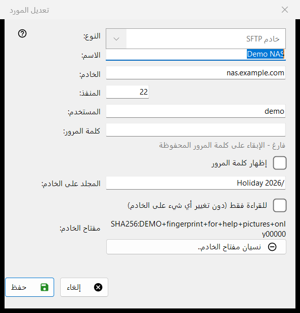
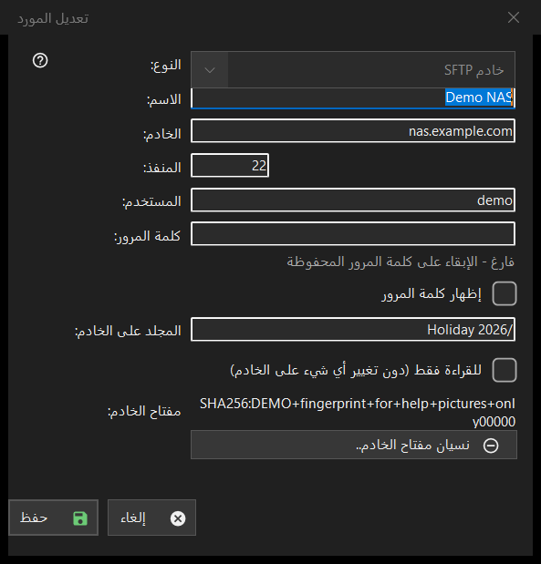

تعديل المورد
الغرض من هذه النافذة
نموذج لخادم أو مجلد شبكة محفوظ واحد. الزر إضافة.. في قائمة الموارد يفتحه فارغًا بعنوان مورد جديد، والزر تعديل.. يفتحه معبّأً بعنوان تعديل المورد، وعنوان sftp:// يُكتب في مربع المجلد يفتحه معبّأً مسبقًا.


بهذا الترتيب
- اختر النوع: خادم SFTP أو مجلد شبكة (SMB).
- أعطِ المورد اسمًا وأدخل عنوان الخادم والمنفذ، أو مسار الشبكة.
- أدخل اسم المستخدم وكلمة المرور.
- حدّد المجلد على الخادم وعلّم للقراءة فقط إذا كان يجب ألا يتغير شيء هناك.
- اضغط الزر حفظ.
عناصر النافذة
النوع
حقل النوع يُختار عند إنشاء المورد، وقيمتاه: خادم SFTP (المنفذ 22، المجلد /) أو مجلد شبكة (SMB). في المورد المحفوظ تكون القائمة معطّلة، لأن كلمة المرور المخزّنة ومفتاح الخادم يخصّان نوعًا واحدًا. في SMB يحمل حقل العنوان التسمية مجلد الشبكة ويقبل مسارًا مثل \\server\folder؛ أما حقلا المنفذ والمجلد فلـ SFTP فقط.
الاسم والخادم والمنفذ
حقل الاسم هو ما تعرضه القائمة؛ وعند تركه فارغًا يُستخدم عنوان الخادم. حقل الخادم اسم أو عنوان IP، وحقل المنفذ رقم من 1 إلى 65535. تغيير الخادم أو المنفذ يُسقط العناوين الأخرى التي جاءت مع مورد مستورد، فلا تذهب كلمة مرور محفوظة أبدًا إلى عنوان لم تُدخله أنت.
المستخدم وكلمة المرور
حقلا المستخدم وكلمة المرور. تُخزَّن كلمة المرور مشفّرة لحساب Windows الخاص بك؛ وتحتفظ القائمة بمرجع إليها فقط. في المورد المحفوظ يكون المربع فارغًا مع التلميح فارغ - الإبقاء على كلمة المرور المحفوظة: اكتب شيئًا فقط لاستبدالها. الخيار إظهار كلمة المرور غير مفعّل في البداية. المورد الجديد يحتاج إلى كلمة مرور.
المجلد وللقراءة فقط
حقل المجلد على الخادم هو المجلد الذي يفتحه العارض أولاً، وهو مسار يبدأ بـ /. الخيار للقراءة فقط (دون تغيير أي شيء على الخادم) يجعل العارض يعامل المورد على أنه للقراءة فقط: لا نقل ولا نسخ إليه، ولا حذف ولا إعادة تسمية فيه.
مفتاح الخادم
يعرض حقل مفتاح الخادم البصمة المحفوظة لهذا الخادم، أو يذكر أنها ستظهر عند أول اتصال حيث تؤكدها. الزر نسيان مفتاح الخادم.. يظهر فقط عندما يكون مفتاح محفوظًا. يسأل أولاً (الجواب الافتراضي هو لا) ويشرح: إذا أُعيد تثبيت الخادم فهذا طبيعي، وإلا فقد ينتحل أحدٌ صفته. يمسح المفتاح فقط: الاتصال التالي يعرض البصمة الجديدة ويسأل من جديد.
حفظ
يفحص الزر حفظ الحقول ويسمّي أول مشكلة بالأحمر تحتها: العنوان أو المنفذ أو المجلد أو اسم المستخدم أو كلمة مرور ناقصة. الزر إلغاء يغلق النموذج دون تغييرات.